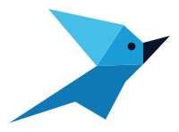

A AIRA constrói ferramentas de software para a saúde. Somos médicos que programam — e cada projeto vai para produção, para a mão de quem cuida. Nada de slide.

Cada projeto da AIRA resolve um problema concreto do cuidado. Não são demos — estão em produção.
Gestão de quimioterapia de ponta a ponta — protocolos, ciclos de infusão, toxicidade (CTCAE), interações e autorização de convênio num só fluxo.
Rastreio de instrumental cirúrgico. Cada instrumento contado, localizado e auditado — antes, durante e depois da cirurgia.
Busca híbrida — semântica e textual — sobre 421.673 ensaios clínicos do ClinicalTrials.gov. Achar o ensaio certo deixa de ser garimpo.
Sugestões clínicas em tempo real durante o atendimento, ancoradas nas diretrizes NCCN. O raciocínio do especialista, ao alcance da beira do leito.
O primeiro app brasileiro de planejamento cirúrgico de nerve sparing para a prostatectomia radical. Transforma os dados da biópsia em um plano cirúrgico individualizado — antes da sala de cirurgia.
Triagem de elegibilidade paciente ↔ ensaio clínico. A partir do caso, ranqueia a compatibilidade com os ensaios abertos.
A AIRA não é uma empresa de tecnologia que entrou na saúde. É o contrário — a saúde é o ponto de partida, e a engenharia, o método.
“Software clínico não pode ser bonito e errado. Tem que ser certo — e, de preferência, também bonito.”
O instrumental cresce. Estes são os projetos hoje na bancada da AIRA.
Marketplace de saúde — conecta profissionais, clínicas e distribuidores: espaços, equipamentos e insumos médicos num só lugar.
Recepcionista virtual de clínica. Agenda, remarca e confirma consultas por WhatsApp e Telegram, em linguagem natural.
A bancada está sempre aberta. Se há um problema do cuidado que pede uma ferramenta de verdade, ele entra aqui.